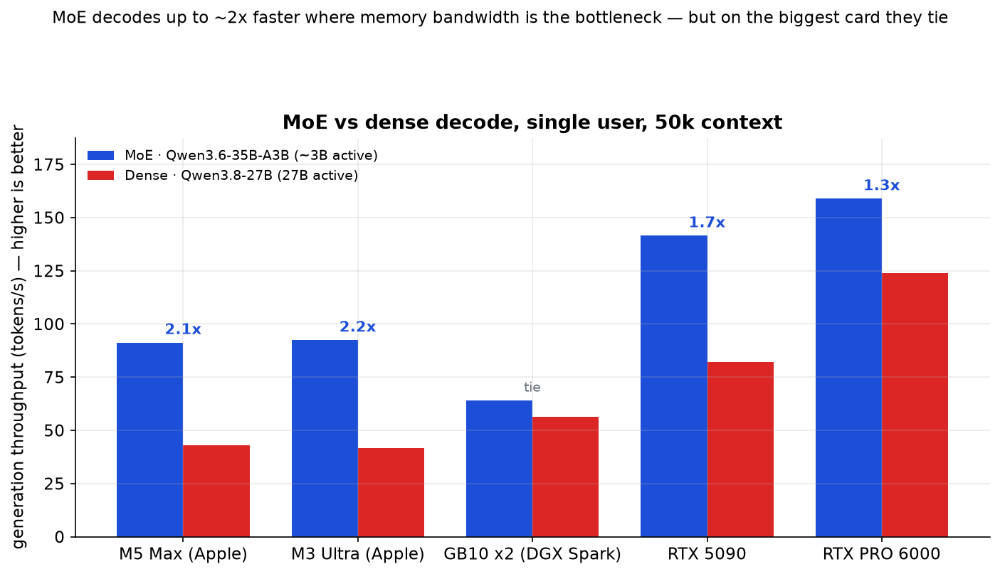
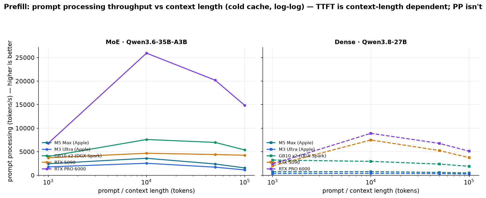
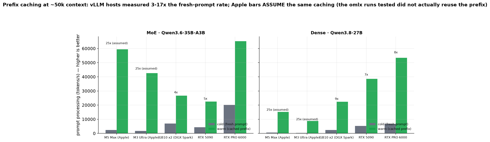
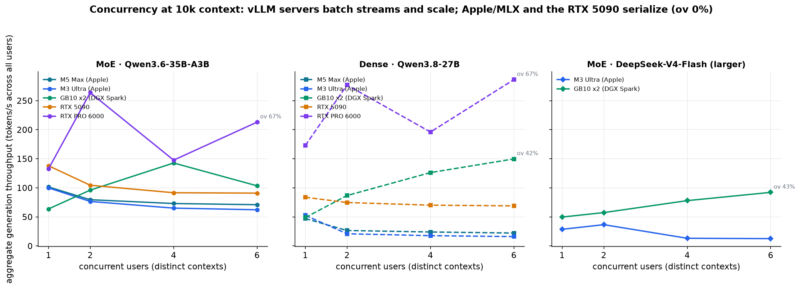
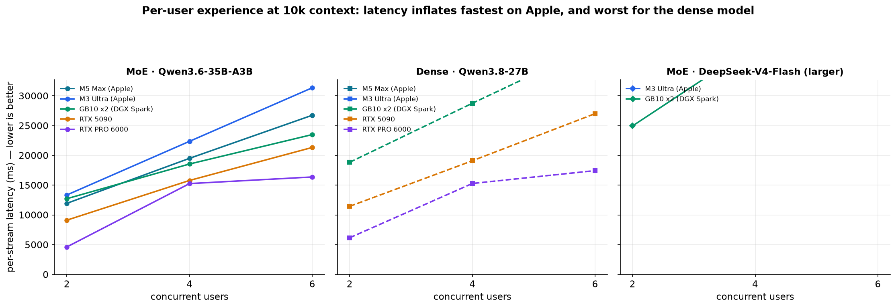
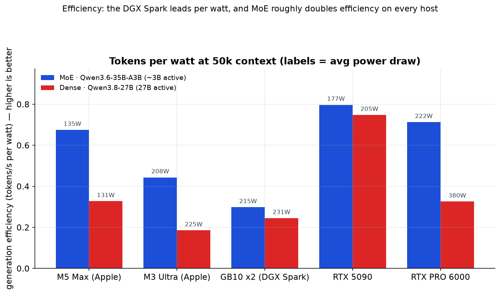
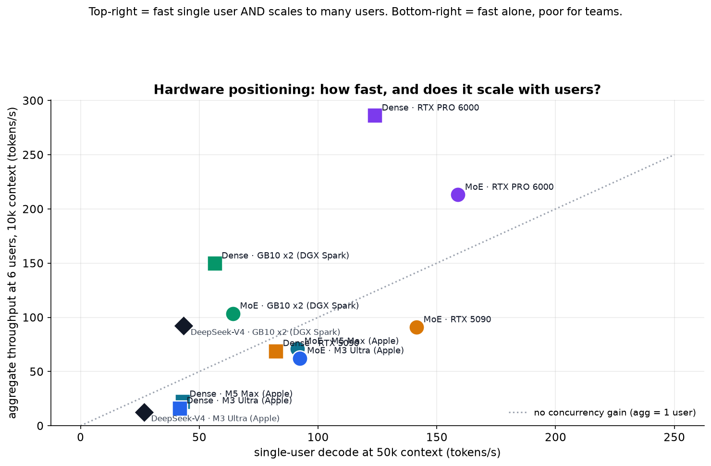

MoE wins 1.4–2.1x on Apple silicon, the RTX 5090 and DGX Spark; the two
architectures tie on the highest-bandwidth card (RTX PRO 6000).

PP = prompt tokens / TTFT, so it's fair across context lengths. The RTX PRO 6000 ingests
~5,000–20,000 tok/s vs a few hundred on Apple — a ~20x gap that grows with context.

NVIDIA/vLLM hosts ingest a cached turn at 3–17x the fresh-prompt rate. The Apple MLX
stack in these runs re-processed the full context every turn (warm ≈ cold, no gain).

Aggregate is measured over the window where all streams decode together.
vLLM servers (RTX PRO 6000, DGX Spark) genuinely batch and scale; Apple/MLX and the RTX 5090
serialize (ov 0%). DeepSeek included as a larger-MoE reference.

Dense on Apple under 6 users reaches ~2 minutes per stream; DeepSeek on a Mac
~3 minutes; MoE cuts Apple to ~30s, and the NVIDIA hosts stay under ~40s.

The DGX Spark leads efficiency (0.82 tok/s/W); MoE roughly doubles efficiency
on every host. Bar labels show average power draw.

RTX PRO 6000 is the only box that is both fast and scales (top-right) — the
multi-user choice (dense: 286 tok/s at 6 users). DGX Spark scales 3x but is mid-speed;
RTX 5090 is fast alone but serializes; Apple is efficient but single-user only. DeepSeek
marked with diamonds.